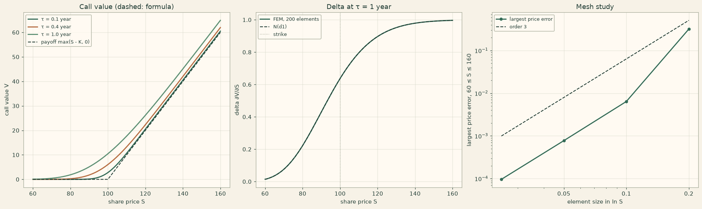

Docs › Examples › Black-Scholes European call
Quantitative finance · 1D
Black-Scholes European call
An at-the-money one-year European call option priced by solving the Black-Scholes equation in the log share price.
Run locally with OneSimulation. The example downloads are free. Running them requires an activated runtime. Runtime Alpha 0.2.1a7 · CPython 3.13 on macOS (Apple Silicon), Ubuntu 22.04 (x86-64), and Windows x64. Installation and activation · View pilot plans. Scope of the reference checks.

What it computes
In x = ln S the Black-Scholes equation is a drift-diffusion-decay balance, so OneSimulation solves it for the option value itself with the species-transport model on a line (signed state), quadratic finite elements and BDF2 steps in the time to maturity, on four meshes; the delta is the gradient of the finite-element solution.
What it checks
The price at the strike is 10.450581 against the Black-Scholes formula 10.450584; the largest price error between S = 60 and 160 falls from 5.8e-3 to 8.6e-5 at third order from 50 to 200 elements, and the delta from the solution gradient matches N(d1) within 4.0e-4 with second-order convergence.
The notebook
The complete notebook, cell by cell. Run it to produce the figures and the comparison printout.
A European call gives the right to buy a share for the strike price \(K\) at the maturity \(T\). Under the Black-Scholes assumptions (log-normal share price \(S\) with volatility \(\sigma\), constant risk-free rate \(r\), no dividends, frictionless hedging) its value \(V(S,\tau)\), written in the time to maturity \(\tau=T-t\), obeys
In the variable \(x=\ln S\) the coefficients become constant:
This is exactly the balance of a diffusing, drifting and decaying species, so OneSimulation solves it with the SpeciesTransport model on a line in \(x\) (diffusivity \(D\), velocity \(u\), decay rate \(r\), "time" \(\tau\)) with quadratic finite elements and BDF2 steps.
A transport model normally holds a nonnegative amount; an option value is a signed quantity in the numerical sense (tiny undershoots far out of the money are harmless), so the model is declared with nonnegative=False. The delta \(\Delta=\partial V/\partial S =S^{-1}\,\partial V/\partial x\) comes from the gradient of the finite-element solution.
| Boundary | Condition on \(V\) | |---|---| | \(x_\mathrm{min}=\ln K-2.5\) (deep out of the money) | \(V=0\) (call worthless) | | \(x_\mathrm{max}=\ln K+2.5\) (deep in the money) | \(V=S-K\,e^{-r\tau}\) |
Reference. F. Black and M. Scholes, The pricing of options and corporate liabilities, J. Political Economy 81, 637-654 (1973); J. C. Hull, Options, Futures, and Other Derivatives, 10th ed., Pearson 2018, ch. 15:
import numpy as np
from onesim.cad.d1 import Line
from onesim.meshing import StructuredLineMesher
from onesim.numerics import Numerics
from onesim.numerics.fem import FiniteElement, Lagrange, Nitsche
from onesim.numerics.linear import SparseDirect
from onesim.numerics.nonlinear import Newton
from onesim.numerics.time import BDF, BackwardEuler
from onesim.physics.chemistry import SpeciesTransport, TransportSpecies
from onesim.simulation import PrescribedValueBoundary, Problem, Simulation
from onesim.simulation.initial_conditions import InitialValue
from onesim.visualization import plots, theme
from scipy.stats import norm
theme.set()Contract and market
An at-the-money one-year call on a share of 100 with 20 % volatility and a 5 % rate. The line in \(x=\ln S\) covers share prices from 8 to 1218.
strike, volatility, rate, maturity = 100.0, 0.20, 0.05, 1.0
low, high = np.log(strike) - 2.5, np.log(strike) + 2.5
line = Line(start=(low, 0.0, 0.0), end=(high, 0.0, 0.0))
print(
f"diffusivity D = {0.5 * volatility**2:.4f}, velocity u = {-(rate - 0.5 * volatility**2):.4f}, decay r = {rate:.3f}; "
f"share prices {np.exp(low):.1f} to {np.exp(high):.0f}"
)Model
The species V is the call value, starting from the payoff at maturity.
model = SpeciesTransport(
domain=line.line,
velocity=-(rate - 0.5 * volatility**2),
nonnegative=False,
species=(TransportSpecies("V", diffusivity=0.5 * volatility**2, decay_rate=rate),),
)
problem = Problem(
name="European call",
geometry=line,
physics=(model,),
boundary_conditions=(
PrescribedValueBoundary(
physics=model,
boundary=line.boundaries.start,
value=lambda time, coordinate: {"V": 0.0},
),
PrescribedValueBoundary(
physics=model,
boundary=line.boundaries.end,
value=lambda time, coordinate: {
"V": np.exp(high) - strike * np.exp(-rate * time)
},
),
),
initial_conditions=(
InitialValue(
model.concentration("V"),
lambda x, y, z: np.maximum(np.exp(x) - strike, 0.0),
),
),
)Mesh study
Four uniform meshes of 25 to 200 quadratic elements, 400 BDF2 steps to maturity each. The prices are compared at maturity between \(S=60\) and \(S=160\).
meshes = {
cells: StructuredLineMesher(cells=cells).generate(line)
for cells in (25, 50, 100, 200)
}
results = {
cells: Simulation(
problem=problem,
mesh=mesh,
numerics=Numerics(
spatial=FiniteElement(
element=Lagrange(order=2), boundary_enforcement=Nitsche()
),
nonlinear_solver=Newton(linear_solver=SparseDirect(), jacobian="analytic"),
time_integrator=BDF(order=2, startup=BackwardEuler()),
),
).run(start_time=0.0, end_time=maturity, time_step=maturity / 400)
for cells, mesh in meshes.items()
}Comparison with the Black-Scholes formula
The price on a fine line of share prices, at maturity and at two earlier times to maturity; the delta from the gradient of the solution in \(x\), divided by \(S\).
def black_scholes(s, tau):
d1 = (np.log(s / strike) + (rate + 0.5 * volatility**2) * tau) / (
volatility * np.sqrt(tau)
)
return s * norm.cdf(d1) - strike * np.exp(-rate * tau) * norm.cdf(
d1 - volatility * np.sqrt(tau)
), norm.cdf(d1)
share = np.linspace(60.0, 160.0, 201)
points = np.column_stack((np.log(share), np.zeros_like(share), np.zeros_like(share)))
price = {
cells: np.asarray(
r.field(model.concentration("V")).evaluate(points, time=maturity)
).reshape(-1)
for cells, r in results.items()
}
delta = {
cells: r.field(model.concentration("V")).gradient(points, time=maturity)[:, 0]
/ share
for cells, r in results.items()
}
exact, exact_delta = black_scholes(share, maturity)
print(" cells h = dx price at S = K largest price error largest delta error")
for cells in results:
print(
f"{cells:7d} {(high - low) / cells:8.4f} {price[cells][share == strike][0]:16.6f} {np.abs(price[cells] - exact).max():21.2e} "
f"{np.abs(delta[cells] - exact_delta).max():21.2e}"
)
print(f"Black-Scholes at S = K: {exact[share == strike][0]:.6f}")
errors = [np.abs(price[cells] - exact).max() for cells in results]
delta_errors = [np.abs(delta[cells] - exact_delta).max() for cells in results]
print(
f"observed order of the price error: {np.log2(errors[-3] / errors[-2]):.2f}, {np.log2(errors[-2] / errors[-1]):.2f}; "
f"of the delta error: {np.log2(delta_errors[-3] / delta_errors[-2]):.2f}, {np.log2(delta_errors[-2] / delta_errors[-1]):.2f}"
)
fine = results[200].field(model.concentration("V"))
earlier = {
tau: np.asarray(fine.evaluate(points, time=tau)).reshape(-1) for tau in (0.1, 0.4)
}
for tau, value in earlier.items():
print(
f"τ = {tau:.1f} year, 200 elements: largest price error {np.abs(value - black_scholes(share, tau)[0]).max():.2e}"
)Quadratic elements converge with the third power of the element size at these sample points; the delta, a derivative of the solution, one order lower.
Figure
The call value before maturity against the payoff and the formula; the delta; and the price error against the element size.
fig = plots.figure(1, 3, size=(17, 5))
plots.line(
share,
{f"τ = {tau:.1f} year": value for tau, value in earlier.items()}
| {"τ = 1.0 year": price[200]},
reference={
f"τ = {tau:.1f} year": black_scholes(share, tau)[0] for tau in (0.1, 0.4, 1.0)
}
| {"payoff max(S - K, 0)": np.maximum(share - strike, 0.0)},
xlabel="share price S",
ylabel="call value V",
title="Call value (dashed: formula)",
legend="upper left",
ax=fig[0],
)
plots.line(
share,
{"FEM, 200 elements": delta[200]},
reference={"N(d1)": exact_delta},
vlines={"strike": strike},
xlabel="share price S",
ylabel="delta ∂V/∂S",
title="Delta at τ = 1 year",
legend="upper left",
ax=fig[1],
)
plots.convergence(
np.array([(high - low) / cells for cells in results]),
{
"largest price error": np.array(errors),
"largest delta error": np.array(delta_errors),
},
order=(3, 2),
xlabel="element size in ln S",
ylabel="largest error, 60 ≤ S ≤ 160",
title="Mesh study",
ax=fig[2],
)
plots.show()Going further
Replace the payoff by \(\max(K-S,0)\) and the far-field values accordingly to price a put and check put-call parity \(C-P=S-Ke^{-r\tau}\). With a time-dependent rate or volatility the formula no longer applies, but the transport model still does. An American option adds the early-exercise constraint \(V\ge\max(S-K,0)\), a free-boundary problem that needs a complementarity solver on top of this model.